|
|
|
According to a convention, the existential (quantitative) information amount achieved as a result of an experiment by means of which the uncertainty of an attribute value shall be reduced from the initial value 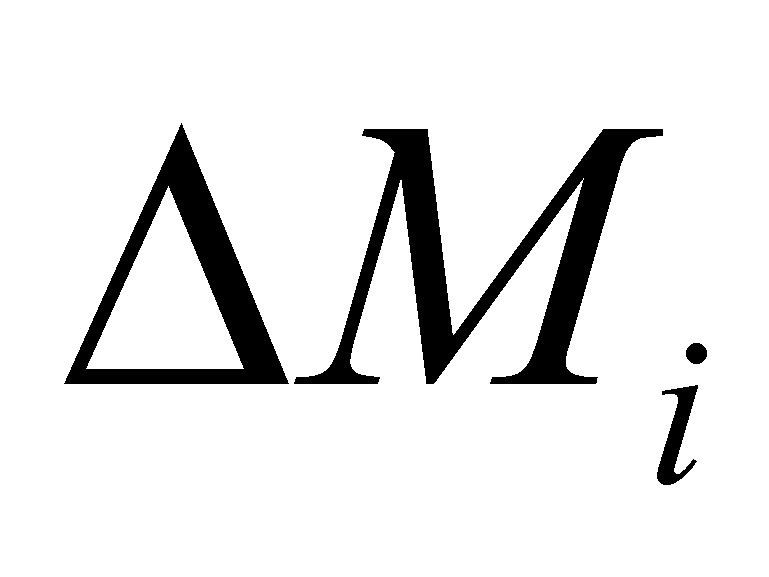 to the final value 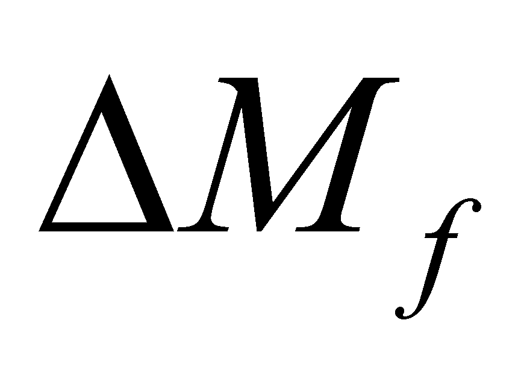 (in which, obviously ) is given by the following relation:
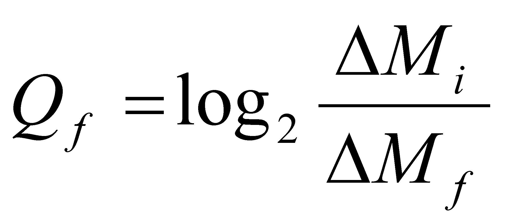 (X.3.1.1.1)
According to a convention as well, the measuring unit of the existential information amount is the bit, this being related to the decrease by half of the final non determination as compared to the initial one (for that reason we have the logarithmation under basis two). By looking at the relation X.3.1.1.1, we shall observe that in order to maintain the finite information amount by starting from a finite and known initial range , it is required that the non determination range (uncertainty) to be as low as it can be, but not zero.
By considering
these aspects, but also the ones about the information processing
systems which were mentioned in chapter 8, let us make a brief review
on the axis (set) of the real numbers {R}within the mathematics
field. One of the basic properties of such a continuous set of
numbers (which can be represented through an infinite axis named the
axis of the real numbers), is that any finite interval,
regardless how small it is,
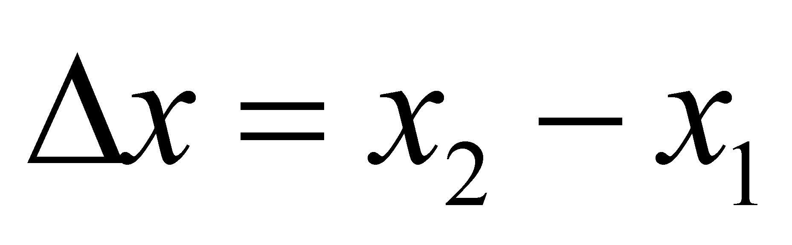
which belongs to this axis, contains an infinity of singular
values (numbers which are associated with dimensionless points
placed on this axis). By taking into account this axis as a
distribution, if the finite range
 is considered as a support interval, and the number of possible
singular values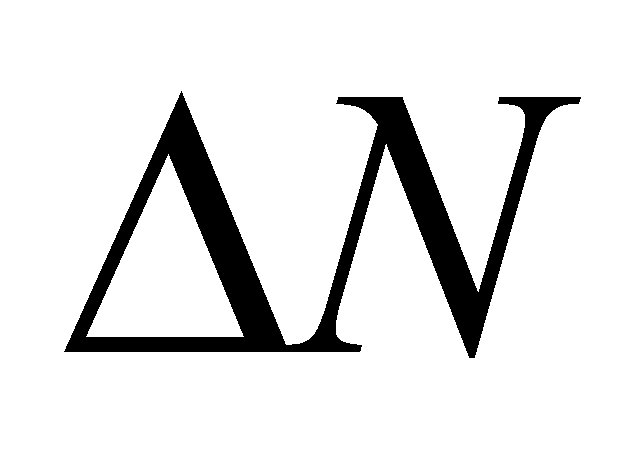
within this range corresponds with the distributed amount, one may
observe that the distribution density of the number of real
singular values arranged on the axis with the same name:
is considered as a support interval, and the number of possible
singular values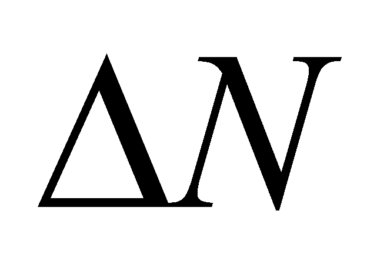
within this range corresponds with the distributed amount, one may
observe that the distribution density of the number of real
singular values arranged on the axis with the same name:
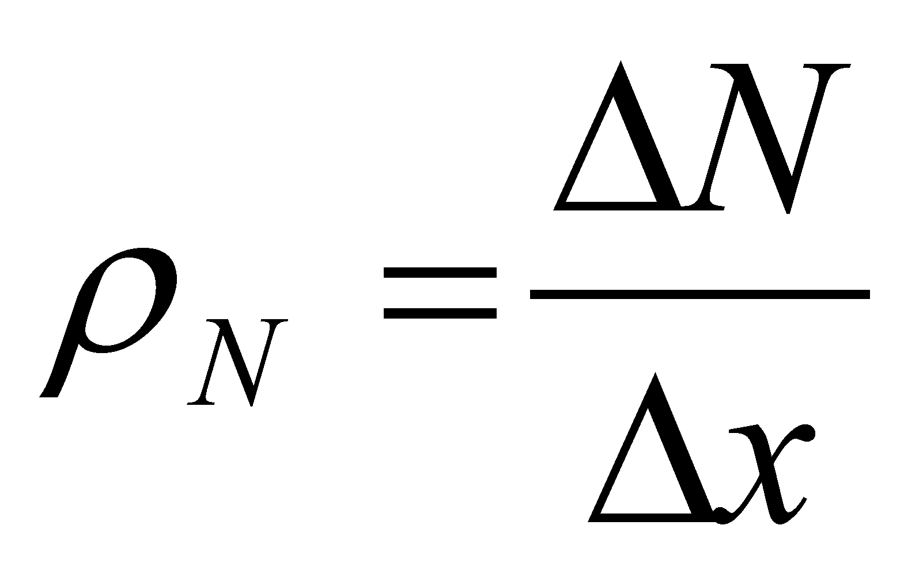 (X.3.1.1.2)
it is infinite (because
is
infinite, whereas
 is finite).
is finite).
The fact that an
interval of finite values
 contains an infinity of singular values, this also means that the non
determination interval:
contains an infinity of singular values, this also means that the non
determination interval:
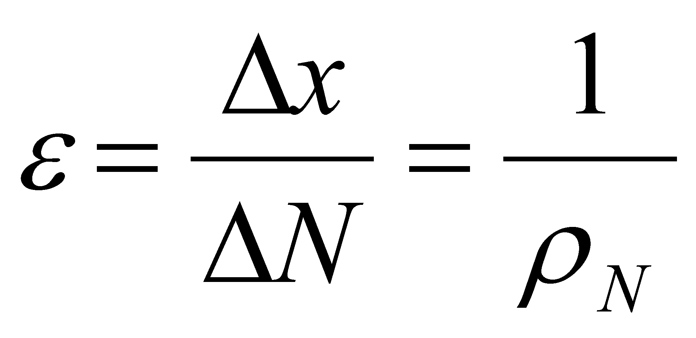 (X.3.1.1.3)
of a singular value placed on this axis is null, otherwise speaking, the information amount contained by such a number is an infinite one86. Due to this reason, this kind of numerical values are named absolute accurate values (AAV) according to the objectual philosophy. The major problem of these values which contain an infinite information amount is that they can be only symbolically87 displayed (such as, for instance, the symbol 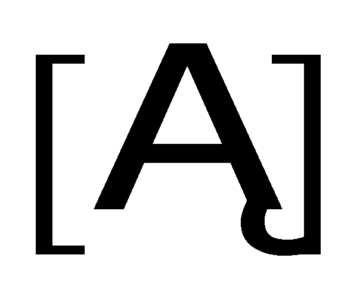, or any other literal symbol for the values along the real axis), but they cannot be displayed as class instances (actual numerical values) because the representation of an absolute accurate numerical value would require an infinite-sized ISS (a number with an infinity of digits).
According to the aspects mentioned so far, it results that the AAV which compose the so-called axis of real numbers are not even abstract realizable (therefore, they are virtual), because the abstract realizability requires that the abstract object to be contained within a finite ISS, and that it must be compatible in terms of size with the maximum accepted size of ISS which IPS can operate with.
The denomination of “real numbers” was assigned to these AAV when an analysis of the information amount contained into these numbers was not possible. Since the values of the real objects attributes which were experimentally determined could be assigned with any value, a set which was able to include all the possible values had to be found. However, a significant remark must be added: the real numbers coming from measurements or calculations were not absolute accurate values, but they were approximations (truncations) of such values, with a no determination range 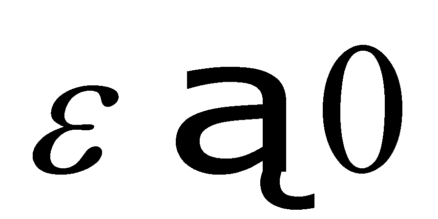, and this interval was due either to the determination (measure) error, or to the limitation of the number of ISS digits to acceptable values (which were processed much easier by the human brain or by the computers).
These numbers (the approximate ones), named normal numerical values in this paper, which can be indeed real, (because they are either abstract realizable or materially realizable as values of the attributes belonging to some real, material objects), do not comply with the definition of the numbers along the axis {R}, because a finite interval x does not contain an infinite number of values any longer, but a finite number:
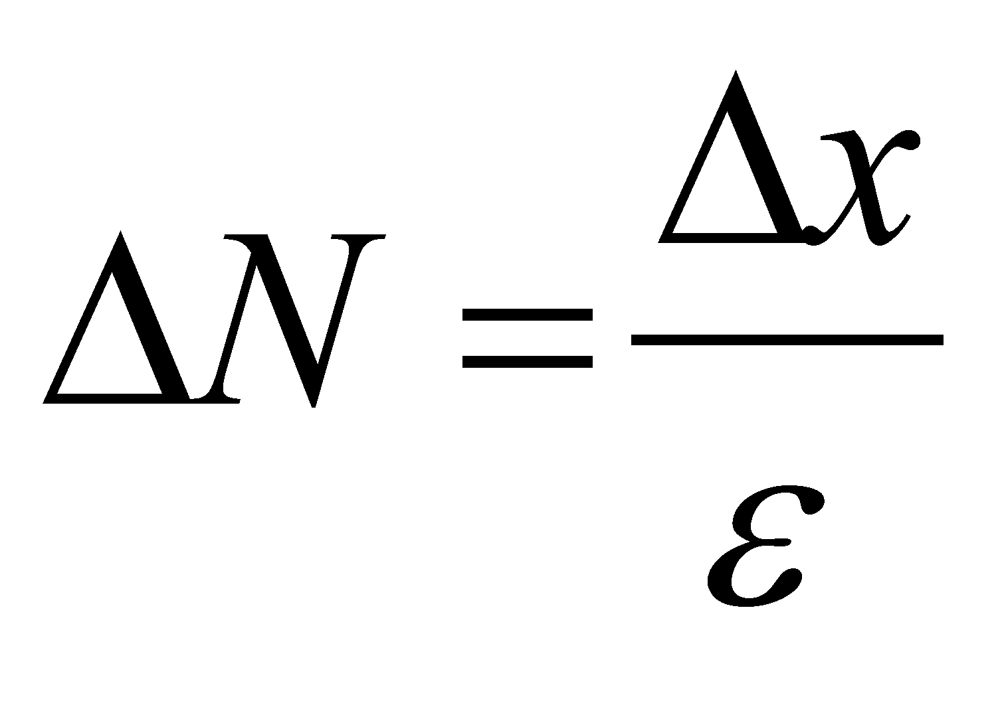 (X.3.1.1.4)
Comment
X.3.1.1.1: For most of the industrial mechanical works, it is enough
to maintain an accuracy in the determination of 1
for dimension sizes, this fact implying that the numbers which
represent these dimensions must have no more than three decimals
after the decimal separator (in the industry based on the metric
system, its size is usually expressed in millimeters). In this case,
a real interval of length values
 =
1 mm shall include only one thousand possible distinct values
(not an infinity). Even the most high-tech AIPS (computers) which may
be found nowadays are not able to currently operate with numbers
higher than tens of digits, and in case of a single value (such as,
for instance, the computed value of ),
numbers with tens of thousand digits may result, but an absolute
accurate value cannot be reached.
=
1 mm shall include only one thousand possible distinct values
(not an infinity). Even the most high-tech AIPS (computers) which may
be found nowadays are not able to currently operate with numbers
higher than tens of digits, and in case of a single value (such as,
for instance, the computed value of ),
numbers with tens of thousand digits may result, but an absolute
accurate value cannot be reached.
86 According to the paper entitled “Micã Enciclopedie Matematicã – Editura Tehnicã, Bucureºti, 1980”, at p. 80 we find the following assertion: “The set of real numbers is made-up from the set of positive and negative decimal fractions with an infinity of digits”
87 In Annex X.3.6, there will also be presented a version of “realizable” AAV as the relative accurate values (RAV), but in this case we are dealing with a symbolic representation, the brackets which frame the decimal period being only a symbol (a substitute) for an infinity of digits.
Copyright © 2006-2011 Aurel Rusu. All rights reserved.